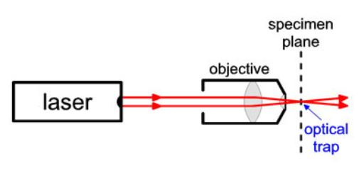
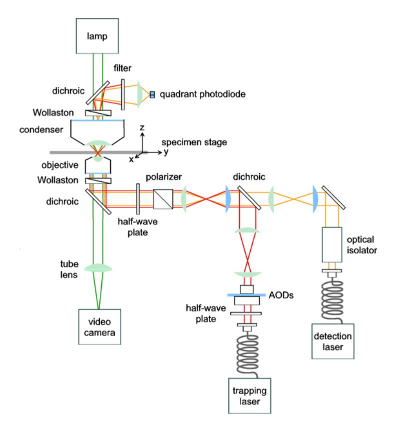
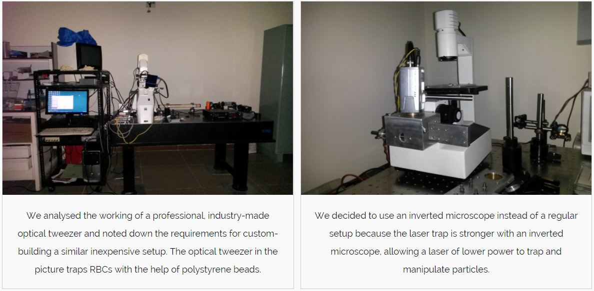
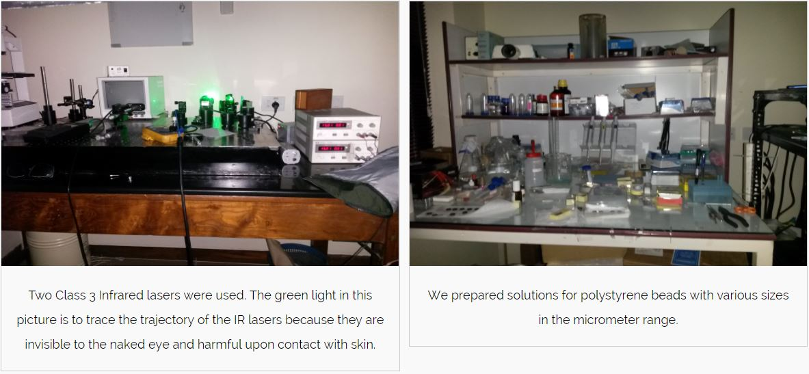
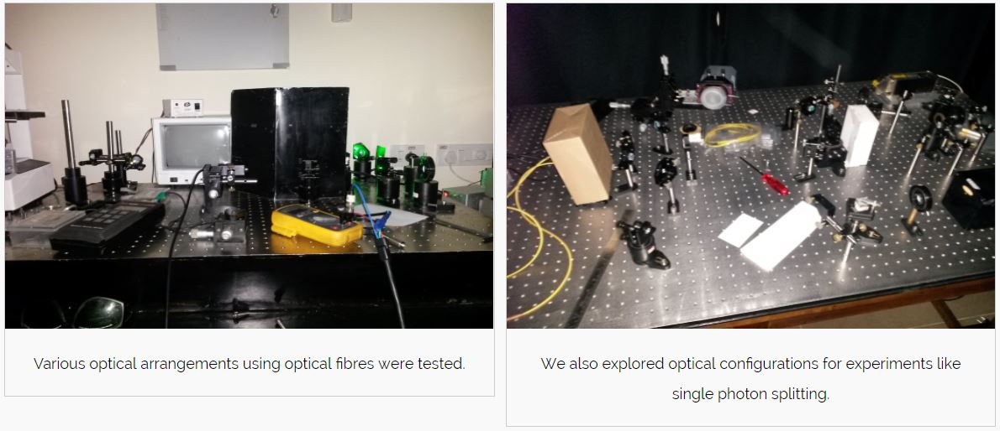
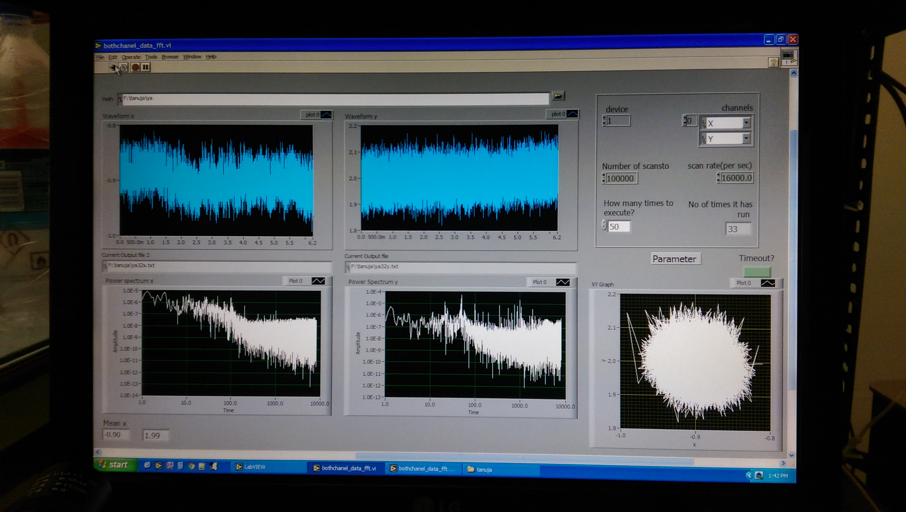

Optical Tweezers are scientific instruments that use a highly focused laser beam to physically hold and move dielectric objects similar to tweezers. Optical tweezers are used to trap dielectric spheres, viruses, bacteria, living cells, organelles, small metal particles, and even strands of DNA. During my project, an inexpensive optical tweezer setup with a microscope system was built for researchers who want a basic optical tweezers solution with real-time, high-resolution capability and particle tracking. The final setup successfully trapped polystyrene beads and its cost was 80% less than the price of setups available in the market.
Supervisor: Prof. Vasant Natarajan at Indian Institute of Science
Members: Tanuja Sawant, Caroline Savio
Duration: 2 months
Link: Video
Above video is a recording of the setup's monitor trapping polystyrene beads using focused laser beams. As can be seen, after trapping the polystyrene beads, one can maneuver their movement by adjusting the controls on the inverted microscope.
PROCESS
BACKGROUND
Optical Tweezers use light to manipulate microscopic objects as small as a single atom. The radiation pressure from a focused laser beam is able to trap small particles. The most basic form of an optical trap is diagramed above. A laser beam is focused by a high-quality microscope objective to a spot in the specimen plane. This spot creates an "optical trap" which is able to hold a small particle at its center.
IDEATION
We had regular brainstorming sessions to find the best way to build a setup afforrdable for a researcher. We studied the properties and uses of various optical instruments like polarizers, quarter-wave plates, half-wave plates, dichroic mirrors, optical isolators, prisms, etc.
  ITERATIVE PROTOTYPING
We considered possible optical arrangements and engaged in iterative prototyping. We trapped polystyrene beads of 6mm and 8mm diameter in our final setup. 
DATA COLLECTION
We collected around 500 data sets for analysis of a trapped polystyrene bead. The figure below is a snapshot of one set of recording. It contains information of power spectrum and light waveforms when a bead is trapped.
